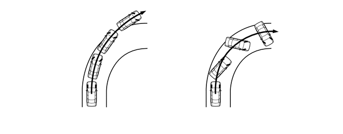

NM3140CG
_54
制动
_025047
制动控制/动态控制系统
_0120069
制动控制系统
CO
控制
F
制动控制/动态控制系统 制动控制系统 控制 车辆稳定性控制 (VSC)
系统控制
a.
以下 2 个示例可视为超过轮胎横向抓地力极限的情况。车辆处于以下任一情况之下时，VSC 通过控制发动机输出功率和各车轮制动器来帮助控制车辆状态。

0.844,0.094 3.417,2.635
2.573,2.542
3.625,0.083 6.198,2.625
2.573,2.542
0.917,0.135 1.125,0.323
0.208,0.188
10
*a
3.719,0.135 3.917,0.302
0.198,0.167
10
*b
| *a | 前轮打滑趋势 | *b | 后轮打滑趋势 |
b.
为了确定车辆状况，传感器检测转向角、车速、车辆横摆率和车辆横向加速度，然后由防滑控制 ECU 进行计算。
c.
车辆是否转向不足是由目标横摆率和车辆实际横摆率之间的差异决定的。如果车辆的实际横摆率小于在驾驶员转动方向盘时应该产生的目标横摆率（目标横摆率由车速和转向角确定），则表明车辆正在以比目标行驶轨迹更大的角度转弯。因此，防滑控制 ECU 确定转向不足趋势较大。
3.677,0.24 3.927,0.479
0.25,0.24
10
*a
4.531,0.781 4.781,1.021
0.25,0.24
10
*b
| *a | 实际行驶轨迹（实际横摆率） | *b | 根据目标横摆率得出的行驶轨迹 |
d.
车辆后轮是否打滑是由车辆打滑角度值和车辆打滑角速度（车辆打滑角度随时间产生的变化）决定的。车辆打滑角度大，且车辆打滑角速度也大时，防滑控制 ECU 确定车辆后轮打滑趋势较大。
3.771,0.875 2.604,0.875
true
3.865,0.823 3.865,0.302
3.865,0.302 4.083,0.302
true
2.427,0.792 2.635,1.021
0.208,0.229
10
*a
4.031,0.531 4.24,0.76
0.208,0.229
10
*c
4.104,0.219 4.302,0.406
0.198,0.188
10
*b
| *a | 车辆重心行驶方向 | *b | 打滑角度 |
| *c | 车辆行驶方向 | - |
e.
防滑控制 ECU 判定车辆有转向不足或转向过度的趋势时，将减少发动机输出功率并向前后车轮施加制动以控制车辆的横摆力矩。以下说明了 VSC 功能的基本操作情况。但是，控制方法会因车辆特性和驾驶条件而不同。
f.
防滑控制 ECU 确定转向不足趋势较大时，将根据该趋势的大小采取对策。防滑控制 ECU 控制发动机输出功率并对转向内侧的前轮和后轮施加制动，以帮助抑制转向不足趋势。
3.385,2.177 3.698,2.333
0.313,0.156
10
*a
| *a | 右转：制动 | - | - |

|
制动力 | 
|
控制力矩 |
g.
防滑控制 ECU 确定转向过度趋势较大时，将根据该趋势的大小采取对策。它对转向外侧的前轮和后轮施加制动，并依靠车辆惯性产生向外的力矩，从而抑制转向过度趋势。制动力使车速降低的同时，确保了良好的车辆稳定性。
3.083,2.406 3.292,2.594
0.208,0.188
10
*a
| *a | 右转 | - | - |
|
|
制动力 |
|
控制力矩 |